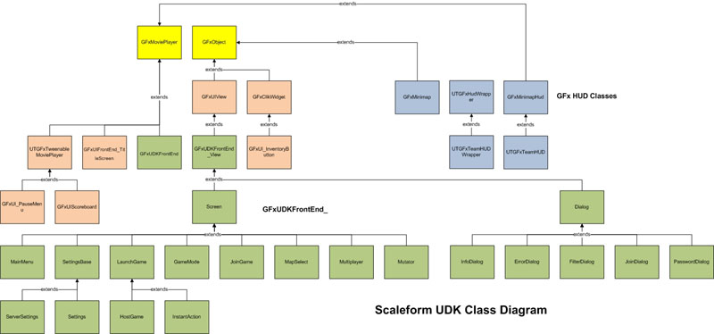

UDN
Search public documentation:
ScaleformBuildingUDKUIsKR
English Translation
日本語訳
中国翻译
Interested in the Unreal Engine?
Visit the Unreal Technology site.
Looking for jobs and company info?
Check out the Epic games site.
Questions about support via UDN?
Contact the UDN Staff
日本語訳
中国翻译
Interested in the Unreal Engine?
Visit the Unreal Technology site.
Looking for jobs and company info?
Check out the Epic games site.
Questions about support via UDN?
Contact the UDN Staff
UDK 스케일폼 UI 만들기
문서 변경사항: Nick Atamas 작성, 홍성진 번역.
개요
디렉토리 구조
<UDK_위치>/UDKGame/Flash 에서 UDK UI를 빌드하는 데 필요한 파일을 찾을 수 있습니다. UDK 유저는 이 페이지에서 별도로 파일을 내려받아야 할 수도 있습니다. UDK UI 디렉토리 구조는 다음과 같습니다:
/UDKGame/Flash/
|
+---ActionScript/
| *.as 파일: UI 로직 및 위젯이 담겨 있습니다.
|
+---UDKFonts/
| | fontconfig.txt
| | fonts_en.fla
| | gfxfontlib.fla
| |
| \---fonts/
| *.ttf 파일: 이 폰트를 설치합니다.
|
+---UDKFrontEnd/
| udk_assets.fla
| udk_manager.fla
| 기타 메인 메뉴 및 연결된 화면에서 사용되는 여러가지 *.fla 파일
|
\---UDKHud/
게임내 UI: HUD, 점수판, 미니맵, 일시정지 메뉴 등에 사용되는 *.fla 파일
플래시 환경에서의 ActionScript 경로
어떤 *.FLA 파일을 *.SWF 파일에서 퍼블리싱하기 전에 먼저
ActionScript/ 디렉토리를 플래시 IDE의 클래스 경로 목록에 추가해야 합니다. 클래스 경로 설정하기는 SWF 퍼블리싱하기
*.SWF는 항상 퍼블리싱 직전에 테스트하는 게 좋습니다. GFx 런처 패널을 통해 쉽게 수행할 수 있습니다. 몇몇 무비는 다른 것에 의존합니다. UDK UI에 대해서, 무비 의존성은 다음과 같습니다:
- 모든 무비는 UDKFonts/*.fla 에 의존합니다. 다음을 먼저 퍼블리싱해야 합니다:
- UDKFonts/fonts_en.fla
- UDKFonts/gfxfontlib.fla
- 모든 프론트엔드 무비는 UDKFrontEnd/udk_assets.fla 에 의존합니다. UDKFrontEnd/ 내의 다른 것들 이전에 퍼블리싱되어야 합니다.
- UDKHud/udk_hud.fla 는 udk_minimap.fla 에 의존합니다. udk_hud.fla 를 테스트하기 전에 udk_minimap.fla 를 먼저 퍼블리싱하십시오.
언리얼 엔진 3 로 임포트하기
.SWF 파일을 퍼블리싱하고 나면 UE3에 가져올 수 있게 됩니다. 세부 사항에 대해서는 GFx 및 UE3: 가져오기 페이지를 참고하십시오. 알림: UDK UI는 이미 UDK에 가져온 상태입니다. 파일을 새로 가져오려면, 다음 패키지를 지워야 합니다:
- UDKGame/Content/GFx/UDKFonts.upk
- UDKGame/Content/GFx/UDKFrontEnd.upk
- UDKGame/Content/GFx/UDKHUD.upk
UDK UI 상속 순서도


{kind=link}